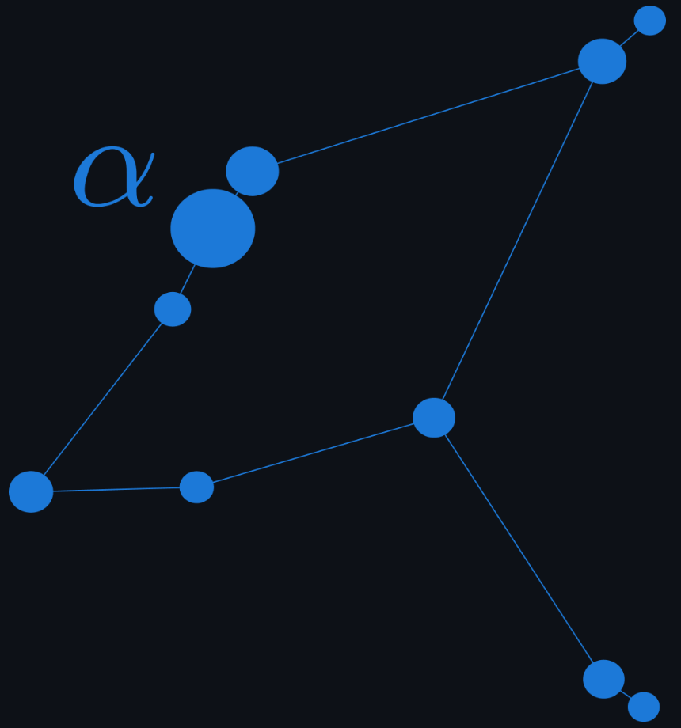

AquiLLM
An open-source Retrieval-Augmented Generation application that helps researchers manage, search, and interact with their research documents using AI. Upload PDFs, fetch arXiv papers, process handwritten notes, and engage in natural language conversations with your research knowledge.
About AquiLLM
AquiLLM addresses the critical problem of knowledge loss in research teams. When students, postdocs, or researchers leave projects, valuable informal practices, troubleshooting techniques, and institutional knowledge often disappear with them. Our platform uses AI to capture and preserve this knowledge, making it accessible through natural language queries.
The system supports multiple document formats and allows researchers to organize their knowledge into focused collections. Instead of searching through files manually, teams can ask questions like "How did we solve the calibration problem last year?" and receive contextual answers based on their archived knowledge.
Multi-Format Support
Upload PDFs, fetch arXiv papers by ID, import VTT transcripts, scrape webpages, and process handwritten notes with OCR.
Natural Language Queries
Engage in context-aware conversations with AI about your document contents using natural language.
Organized Collections
Organize documents into logical collections for focused research projects and streamlined knowledge management.
Multiple AI Providers
Support for various AI providers including Claude, OpenAI, and Gemini for flexible research assistance.
Current Contributors
Development
Chandler Campbell
Southern Oregon University
Jacob Matson
Southern Oregon University
Skyler Acosta
Southern Oregon University
Elyjah Kiehne
Southern Oregon University
Kevin Donlon
Southern Oregon University
Research Direction
Dr. Bernadette Boscoe
Southern Oregon University
Dr. Tuan Do
UCLA